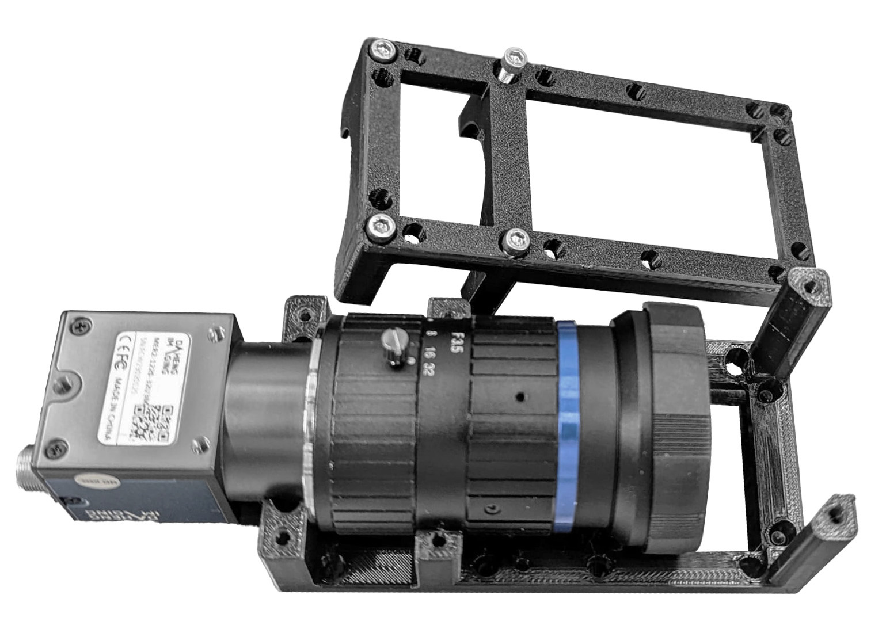
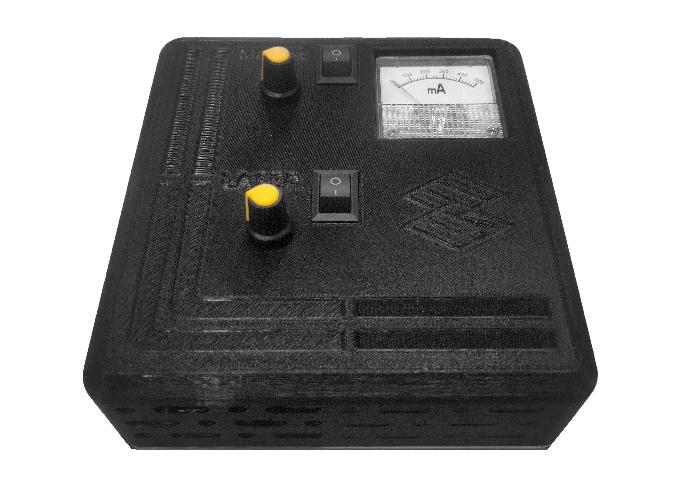
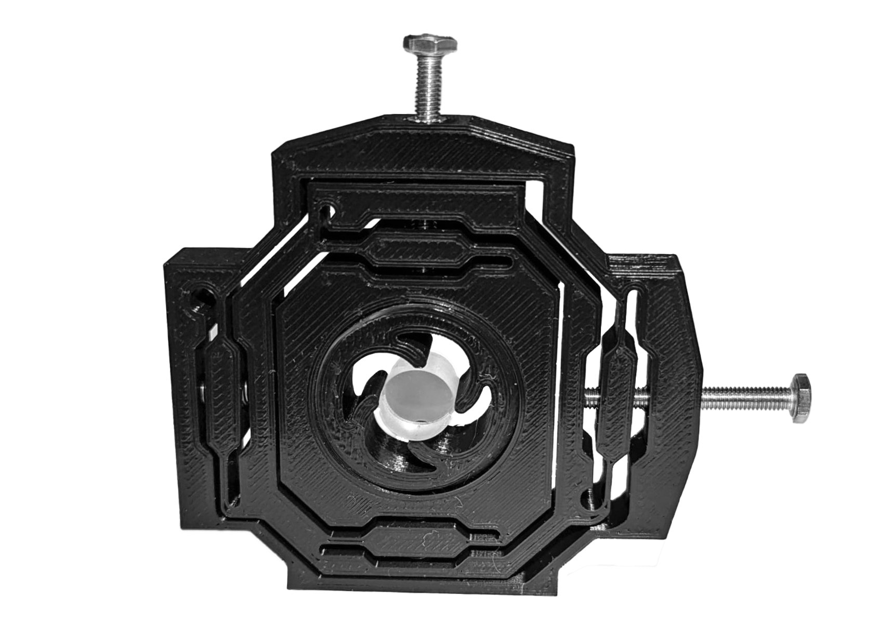

CLAVE Microscope
by Tobias Wenzel, Bennedict Diederich, and Matías Hurtado-Labarca
CLAVE Microscope
Parts Gallery
Prepare the pieces
Build your UC2
Parts Gallery
Here you can access and download all the components
Adjustable_Slit
Camera container

Laser Control-Interface
Cylindrical Lens Flex Holder

Filter Holder
Kinematic Mirrors
Power lens XY aligner
Stepper_Motor_Container

Make your own versions with our
Onshape editable file